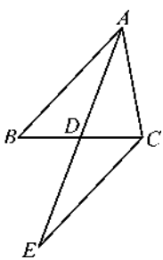
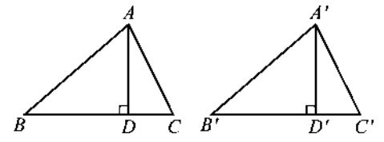
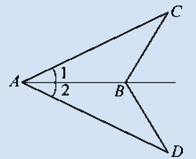
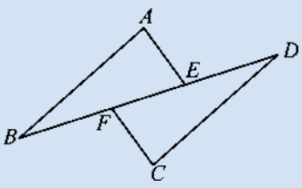
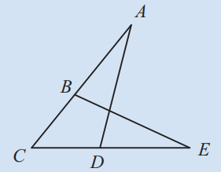

我们已经学习了判定三角形全等的“角边角”（ASA）和“角角边”（AAS）定理。其中，AAS是在ASA的基础上，利用三角形内角和推导得出的。本节我们将通过几个典型例题，进一步体会AAS在证明线段相等、角相等以及几何推理中的重要作用，并学习如何将实际问题转化为全等三角形问题。
如图12.2.15，在 $\triangle ABC$ 中，$D$ 是边 $BC$ 的中点，过点 $C$ 作直线 $CE$，使 $CE // AB$，交 $AD$ 的延长线于点 $E$。求证：$AD = ED$。

证明：
$\because CE // AB$ (已知)，
$\therefore \angle ABD = \angle ECD$，$\angle BAD = \angle CED$ (两直线平行，内错角相等)。
在 $\triangle ABD$ 和 $\triangle ECD$ 中，
$\angle ABD = \angle ECD$ (已证)，
$\angle BAD = \angle CED$ (已证)，
$BD = CD$ (已知，D是中点)，
$\therefore \triangle ABD \cong \triangle ECD$ (AAS)。
$\therefore AD = ED$ (全等三角形的对应边相等)。
概括 要证明两条线段相等，可考虑它们分别属于两个三角形，若能证明这两个三角形全等，便可利用全等三角形的对应边相等得到结论。这是证明线段相等的一个重要方法。同样，证明角相等也可采用类似的思路。
证明：全等三角形对应边上的高相等。

已知：如图12.2.16，$\triangle ABC \cong \triangle A'B'C'$，$AD$、$A'D'$ 分别是 $\triangle ABC$ 的边 $BC$ 和 $\triangle A'B'C'$ 的边 $B'C'$ 上的高。
求证：$AD = A'D'$。
证明：
$\because \triangle ABC \cong \triangle A'B'C'$ (已知)，
$\therefore AB = A'B'$，$\angle B = \angle B'$ (全等三角形的对应边、对应角相等)。
在 $\triangle ABD$ 和 $\triangle A'B'D'$ 中，
$\angle ADB = \angle A'D'B' = 90^\circ$ (已知)，
$\angle B = \angle B'$ (已证)，
$AB = A'B'$ (已证)，
$\therefore \triangle ABD \cong \triangle A'B'D'$ (AAS)。
$\therefore AD = A'D'$ (全等三角形的对应边相等)。
如图，$\triangle ABC \cong \triangle A'B'C'$，$AM$、$A'M'$ 分别是 $\triangle ABC$ 的边 $BC$ 和 $\triangle A'B'C'$ 的边 $B'C'$ 上的中线。你能证明 $AM = A'M'$ 吗？
类似地，对应角的平分线也相等。请尝试写出证明过程。
证明提示：
$\because \triangle ABC \cong \triangle A'B'C'$，
$\therefore AB = A'B'$，$\angle B = \angle B'$，$BC = B'C'$。
$\because AM$、$A'M'$ 分别是中线，$\therefore BM = \dfrac{1}{2}BC$，$B'M' = \dfrac{1}{2}B'C'$，
$\therefore BM = B'M'$。
在 $\triangle ABM$ 和 $\triangle A'B'M'$ 中，
$AB = A'B'$，$\angle B = \angle B'$，$BM = B'M'$，
$\therefore \triangle ABM \cong \triangle A'B'M'$ (SAS)，
$\therefore AM = A'M'$。
1. 如图，$\angle 1 = \angle 2$，$\angle C = \angle D$。求证：$AC = AD$。

证明：
在 $\triangle ABC$ 和 $\triangle ABD$ 中，
$\angle 1 = \angle 2$ (已知)，
$\angle C = \angle D$ (已知)，
$AB = AB$ (公共边)，
$\therefore \triangle ABC \cong \triangle ABD$ (AAS)。
$\therefore AC = AD$ (全等三角形的对应边相等)。
2. 如图，$AB // CD$，$AE // CF$，$BF = DE$。试找出图中其他的相等关系，并给出证明。

可得 $AB = CD$，$AE = CF$，$\triangle ABE \cong \triangle CDF$ 等。
证明：
$\because AB // CD$，$\therefore \angle B = \angle D$ (两直线平行，内错角相等)。
$\because AE // CF$，$\therefore \angle AEB = \angle CFD$ (两直线平行，内错角相等)。
$\because BF = DE$，$\therefore BF + EF = DE + EF$，即 $BE = DF$。
在 $\triangle ABE$ 和 $\triangle CDF$ 中，
$\angle B = \angle D$ (已证)，
$BE = DF$ (已证)，
$\angle AEB = \angle CFD$ (已证)，
$\therefore \triangle ABE \cong \triangle CDF$ (ASA)。
$\therefore AB = CD$，$AE = CF$ (全等三角形的对应边相等)。
3. 如图，点 $B, D$ 分别在线段 $AC, EC$ 上，$\angle A = \angle E$，$AD = EB$。求证：$AC = EC$。

证明：
在 $\triangle ACD$ 和 $\triangle ECB$ 中：
转化思想： 将线段相等问题转化为三角形全等证明。
模型思想： 全等三角形是几何证明的基本模型。
逻辑推理： 从已知条件出发，逐步推导，培养严谨的逻辑思维。
全等三角形在生活中的应用
全等三角形的判定不仅用于数学证明，还广泛应用于实际生活，如测量距离、制作模具、建筑设计等。例如，工人师傅用“边角边”检验两个零件是否完全相同；测量河宽时，构造全等三角形间接得到数据。全等是“形变而质不变”的典范。